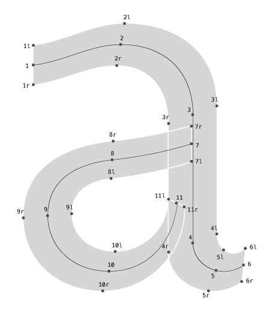
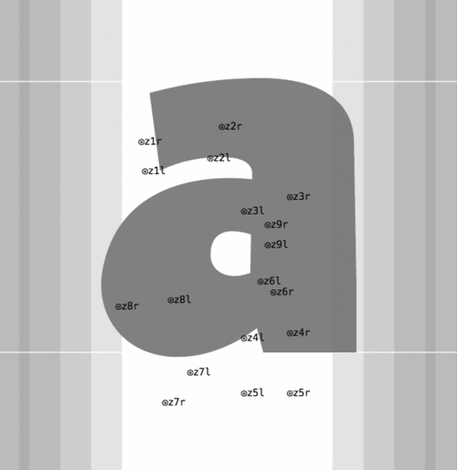
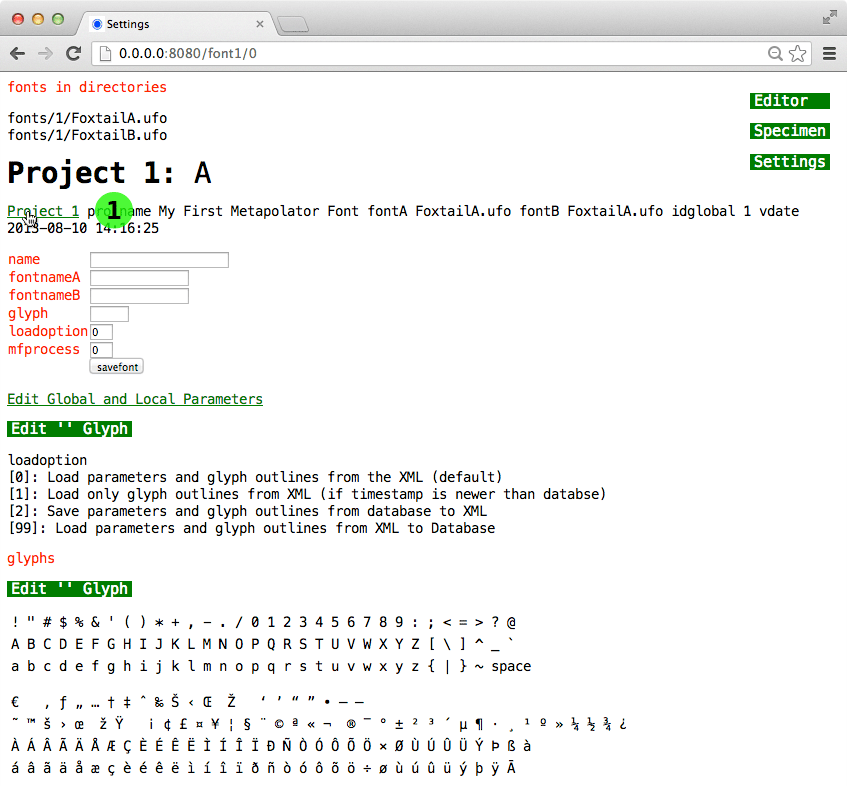

This short guide is provided as a walkthrough for using Metapolator to design typeface families. It should be read in its entirety in order to understand how to use Metapolator. A designer using Metapolator should be familiar with basic type design principals; for example, typeface anatomy and optical correction. A good understanding of basic highschool level algebra is also helpful.
Metapolator is constantly changing, the interface is tentative and we recognise there are inefficiencies. This is up to date as of 16 August 2013
Let's meata-design!
from Wikipedia:
Unlike more common outline font formats (such as TrueType or PostScript Type 1), a Metafont font is primarily made up of strokes with finite-width 'pens', along with filled regions. Thus, rather than describing the outline of the glyph directly, a Metafont file describes the pen paths.

Lowercase 'a' as constructed by Metafont
The numerical points denote the 'pen positions' (also known as 'z-points') of a stroke. The z-points are where Metafont functions are applied – see z-point Functions. The 'l' and 'r' points define the thickness (known as 'pen widths') – and angle of each 'pen position'. Together, the 'pen positions' define a pen path (or 'penstroke') – the black line.
Metapolator converts outline fonts to Metafonts by parsing the point coordinates from xml and calculating the 'pen positions' and 'pen widths'. To do so, Metapolator requires specially prepared UFO files.
See UFO Preparation for further instructions on how to prepare outlines – especially for stemcuts and inktraps.
Metapolator uses two font 'masters' – FontA and FontB – to interpolate between and generate fonts. FontA and FontB may have different Pen positions (as in the position of the points in the UFO files) and different Local Parameters. Metapolator can also interpolate between different z-point Functions for:

Metapolation between FontA and FontB
The first screen is the 'Settings' screen.

1. Click the Project Number you wish to work on.
2. Enter the Project Name, FontA and FontB if not already filled in.
3. Select the glyph you wish to edit.
4. 'Edit' to go to the Editor.
If you are starting a new project, you may wish to edit the Global and Local Parameters first.